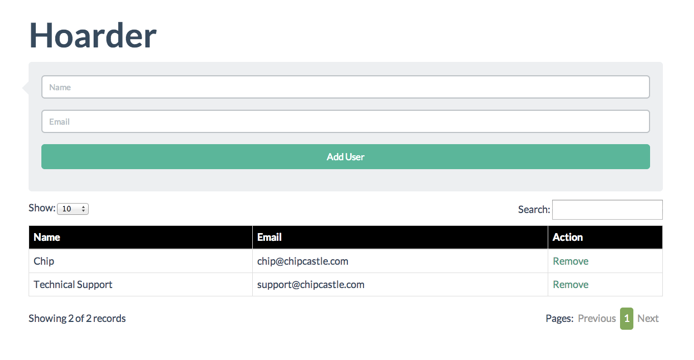

Hoarder
Single-page app for adding/removing records
Hoarder uses the following tools:
Flat-UI for CSS styling and images - http://designmodo.github.io/Flat-UI/
Dynatable for searching and pagination - http://www.dynatable.com/
HTML5 localStorage for adding & removing records
jQuery
HTML

Quick Start
-
Clone the app (or Download the zip file and unarchive):
git clone https://github.com/chip/hoarder.git -
Change into the directory:
cd hoarder -
Open with your web browser:
On OS X
open index.htmlOr in your browser's location bar
file:///path/to/hoarder/index.html